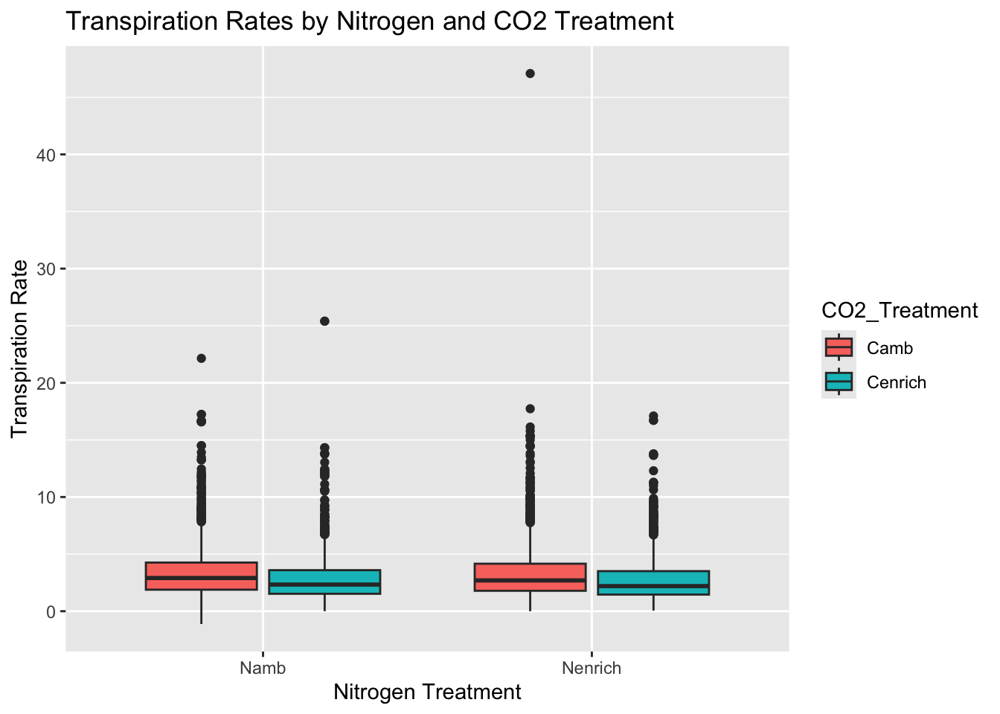

── Attaching core tidyverse packages ──────────────────────── tidyverse 2.0.0 ──
✔ dplyr 1.1.4 ✔ readr 2.1.5
✔ forcats 1.0.0 ✔ stringr 1.5.1
✔ ggplot2 3.5.1 ✔ tibble 3.2.1
✔ lubridate 1.9.3 ✔ tidyr 1.3.1
✔ purrr 1.0.2
── Conflicts ────────────────────────────────────────── tidyverse_conflicts() ──
✖ dplyr::filter() masks stats::filter()
✖ dplyr::lag() masks stats::lag()
ℹ Use the conflicted package (<http://conflicted.r-lib.org/>) to force all conflicts to become errors
library(here)
here() starts at /Users/ebar/Library/CloudStorage/OneDrive-St.LawrenceUniversity/Classes/Biostats/Biostats F24/Student Work/R Projects/CapDAP/Augustine-Capstone-Project
library(multcomp)
Loading required package: mvtnorm
Loading required package: survival
Loading required package: TH.data
Loading required package: MASS
Attaching package: 'MASS'
The following object is masked from 'package:dplyr':
select
Attaching package: 'TH.data'
The following object is masked from 'package:MASS':
geyser
library(ggfortify)library(car)
Loading required package: carData
Attaching package: 'car'
The following object is masked from 'package:dplyr':
recode
The following object is masked from 'package:purrr':
some
##Introduction
Data Set Description:
Source of Data: The data originally comes from the E141 experiment at the Cedar Creek Ecosystem Science Reserve. The purpose of this data set was to investigate how different global changes (altered CO2 and nitrogen levels) affect plant processes such as assimilation rate and transpiration rates.
Time Frame: The measurements taken were collected during 1998 to 2013 growing season.
Size of Data set: The data set contains measurements from thousands of plant samples across multiple treatment plots. After filtering the final data set had approx. 5,500 observations, each with an associated trait measurements including assimilation and transpiration rates, with corresponding CO2 and nitrogen treatments.
Data Preparation: Before performing analysis, data was cleaned and filtered to remove missing or nonsense values. Treatments were converted to factors, and exploratory data analyses was conducted to understand distributions, outlier checks, and to identify statisitcal tests. Specifically;
Converted CO2_Treatment and Nitrogen_Treatment to factor variables.
Filtered out non complete records.
Outliers removed such as 2003 when other factors other then applied treatments affected transpiration rates.
Made initial plots to assess visually distributions and identify violations of normality or that of equal variances.
# Read in the filtered datasetdata <-read.csv(here("data","filtered_e141_Photosynthesis_data.csv"))# convert treatments to factorsdata$CO2_Treatment <-as.factor(data$CO2_Treatment)data$Nitrogen_Treatment <-as.factor(data$Nitrogen_Treatment)# checkhead(data)
Below I present two separate analyses that both follow the workflow used in class. Each include:
Biological justifications and hypotheses.
Plot -> Guess Relationships -> Create model -> Check model assumptions -> Interpret model -> Final Plot.
A final statement of results and their biological reasoning.
Analysis 1: Effect of CO2 treatment on Assimilation Rates
Bio Justification and Hypotheses:
Null Hypothesis: There is no significant difference in assimilation rate between two CO2 treatments (eg. Cenrich (enriched) vs. Camb (ambient))
Alternative Hypothesis: There is a significant difference in assimilation rates between Cenrich and Camb CO2 treatments.
Biological reasoning: Elevated CO2 can stimulate photosynthesis (Ainsworth & Long 2005), but under experimental conditions plants may acclimate or other limiting factors might reduce the expected increase in assimilation. Testing the differences in ambient and enriched CO2 plots may help understand how global change affects plant carbon gain.
Data Types:
Predictor Variable: CO2_Treatment (factor with levels including “Camb” and “Cenrich”)
Response Variable: assimilation_rate (continuous, measured rate of carbon assimilation by leaves)
Data Visual and Initial Guesses
ggplot(data, aes(x = assimilation_rate, fill = CO2_Treatment))+geom_histogram(binwidth =0.5, position ="dodge", alpha =0.7) +labs(title ="Distribution of Assimilation Rates by CO2 Treatments", x ="Assimilation Rate", y ="Frequency") +theme_bw()
Interpretation: Both treatments show a unimodal distribution with some higher value outliers. The box plots (not shown here but done in previous explorations) suggests no strong difference in medians between the treatments. So we guess that there may be no significant difference.
Model Selection:
Both normality and equal variance assumptions are violated (as shown by Shapiro-Wilk and Levene’s tests), so we selected a non-parametric test (Mann-Whitney U test)
Shapiro-Wilk normality test
data: data$assimilation_rate[data$CO2_Treatment == "Cenrich"]
W = 0.88978, p-value < 2.2e-16
#variance TestleveneTest(assimilation_rate ~ CO2_Treatment, data = data)
Levene's Test for Homogeneity of Variance (center = median)
Df F value Pr(>F)
group 1 23.78 1.111e-06 ***
5493
---
Signif. codes: 0 '***' 0.001 '**' 0.01 '*' 0.05 '.' 0.1 ' ' 1
Normality (Shapiro-Wilk): Both groups had p-values < 0.05, normality is violated.
Equal Variance (Levene’s Test): p < 0.05, variances are not equal.
Given these, we do not use a t-test, but a Wilcoxon Rank Sum test.
Stat Analysis
wilcox_results<-wilcox.test(assimilation_rate ~ CO2_Treatment, data = data) wilcox_results
Wilcoxon rank sum test with continuity correction
data: assimilation_rate by CO2_Treatment
W = 3834290, p-value = 0.05745
alternative hypothesis: true location shift is not equal to 0
W = 3,834,290, p = 0.05745
Interpretation:
Since p > 0.05, we fail to reject the null hypothesis. There is no statistically significant difference in assimilation rates between ambient and enriched CO2 treatments
Biological Interpretation:
Even though initial expectations say that elevated CO2 might increase assimilation (Ainsworth & Long 2005), the results suggest no statistically meaningful difference under the conditions. It may be that other factors came into play (nutrients, water availability etc.) hindered the effect of CO2 enrichment on assimilation. Another possibility explained in scholarship may be a reduced initial stimulation of photosynthesis by increased CO2.
As per the Wilcoxon test the test does not use means or standard deviations but rather the rankings of the values so no need for those, also we found no significant difference so no need for a final plot BUT…. lets get some visuals anyway and show means and all that in a plot
summary_means <- data %>%group_by(CO2_Treatment) %>%summarize(mean_assim =mean(assimilation_rate, na.rm =TRUE), n =n())grand_mean <-mean(data$assimilation_rate, na.rm =TRUE) ggplot(data, aes(x = CO2_Treatment, y = assimilation_rate)) +geom_jitter(width =0.4, alpha =0.5) +geom_hline(yintercept = grand_mean, linetype ="dashed", color ="gray") +geom_point(data = summary_means, aes(x = CO2_Treatment, y = mean_assim), color="red", size=5, shape=21, fill="red") +labs(title="Assimilation Rates by CO2 Treatment", x="CO2 Treatment",y="Assimilation Rate", subtitle="Points show all observations, red circles are treatment means, dashed line is grand mean") +theme_bw()
Analysis 2: Two-Way ANOVA for CO2 and Nitrogen Treatment on Transpiration Rates
Biological Justification and Hypotheses
Null CO2: There is no significant effect of CO2 treatment on transpiration rates. Null Nitrogen: There is no significant effect of nitrogen treatment on transpiration rates. Null interaction: There is no significant interaction between CO2 and nitrogen treatments on transpiration rates.
Alternative Hypotheses:
Alt CO2: CO2 treatments significantly affects transpiration rates. Alt Nitrogen: Nitrogen treatment significantly affects transpiration rates. Alt Interaction: There is a significant interaction between CO2 and nitrogen treatments on transpiration rates.
Biological Reasoning: Transpiration rates can be influenced by physiology, stomatal conductance, and Nitrogen presence. Increased CO2 can reduce stomatal conductance, which can lower transpiration (Leakey et al. 2009). Nitrogen presence levels can influence leaf area and metabolism, which can potentially affect transpiration as well. The interaction test if for whether effects of CO2 change dependent on N levels.
Data Types:
Predictor Variables: CO2_Treatment (factor, Camb or Cenrich) Nitrogen_Treatment (factor, Namb or Nenrich)
ggplot(data, aes(x= Nitrogen_Treatment, y= transpiration_rate, fill = CO2_Treatment)) +geom_boxplot()+labs(title ="Transpiration Rates by Nitrogen and CO2 Treatment", x="Nitrogen Treatment", y="Transpiration Rate")

Interpretation Of Plot: The median transpiration rate appears similar across the nitrogen treatments, but CO2 enriched shows in a general sense lower transpiration rates. The variability looks consistence across it all with some higher value outliers. Suspect a main effect of CO2 but not with nitrogen.
Model time and Checking Assumptions
model<-aov(transpiration_rate ~ Nitrogen_Treatment * CO2_Treatment, data = data)autoplot(model)
Assumption Findings: Residuals vs. Fitted: Some heterogeneity Q-Q plot: Deviation from normality at tails (expected) Scale-Location: Heteroscedasticity Residuals vs Leverage: Some influencing points
Though the assumptions aren’t perfect, ANOVA is pretty durable when it comes to large sample sizes.
CO2 Treatment: Significant (f= 60.310, p < 0.0001) Nitrogen Treatment: Not significant (f= 1.58, p = 0.209) Interaction: Not significant (f= 0.087, p = 0.768)
Results: CO2 treatment does differentiate significantly (p < 0.0001), with enriched CO2 treatment decreasing transpiration
Nitrogen treatment does no differ significantly
No signs of significant interactions between treatments
Interpretation: We reject the null hypothesis for CO2 treatment, showing that enriched CO2 significantly reduces transpiration. We fail to reject the null hypothesis for nitrogen treatment and the interaction of the two. Thus showing no significant effect of nitrogen or its combo with CO2 on transpiration rates.
Biological Interpretation: The results does side with the theory that increased CO2 leads to stomatal closure, reducing water losses(Leakey et al. 2009). Nitrogen treatment by itself does not alter this outcome significantly, and there is no interaction, which suggests that CO2 effect on transpiration is similar not dependent on nitrogen presence (Had a little laugh that the individuals name is Leakey as their study proves that its less leakey with higher CO2)
ggplot(summary_data, aes(x= Nitrogen_Treatment, y = mean_trans, color = CO2_Treatment, group = CO2_Treatment)) +geom_point(position=position_dodge(width=0.2)) +geom_line(position=position_dodge(width=0.2)) +geom_errorbar(aes(ymin = mean_trans - se_trans, ymax = mean_trans+ se_trans),width=0.2, position =position_dodge(width=0.2)) +labs(title ="Effect of CO2 and Nitrogen on Transpiration Rates", x="Nitrogen Treatment",y="Mean Transpiration Rate ± SE") +theme_bw()
Challenges: During this project my main challenge was learning how to deal with all the violations of assumptions for the parametric tests. I had to teach myself (wasn’t that bad) how to use non parametric alternatives and how to interpret their results was a new skill that was not fully covered in lectures that I appreciated. Also getting really creative with my ggplot to make models, learning how to layer different things to make a plot show what I want it to show(without hiding things).
References: Ainsworth, E.A. & Long, S.P. (2005). A meta‐analytic review of the responses of photosynthesis, canopy properties and plant production to rising CO2. New Phytologist, 165(2), 351–372.
Leakey, A.D.B., et al. (2009). Elevated CO2 effects on plant carbon, nitrogen, and water relations: Six important lessons from FACE. Journal of Experimental Botany, 60(10), 2859–2876.